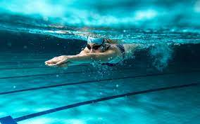
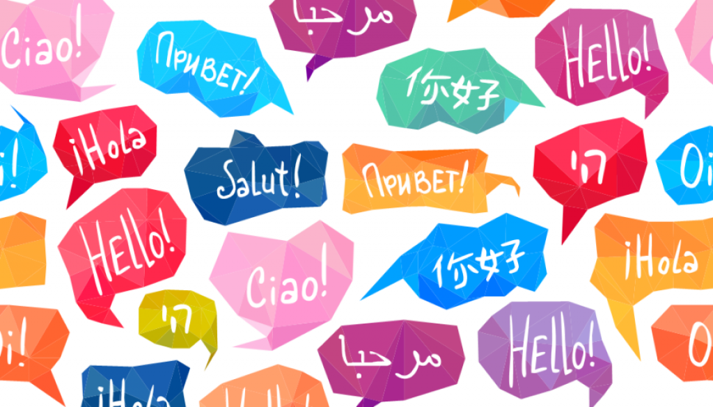
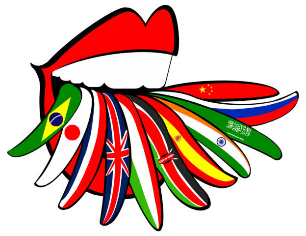
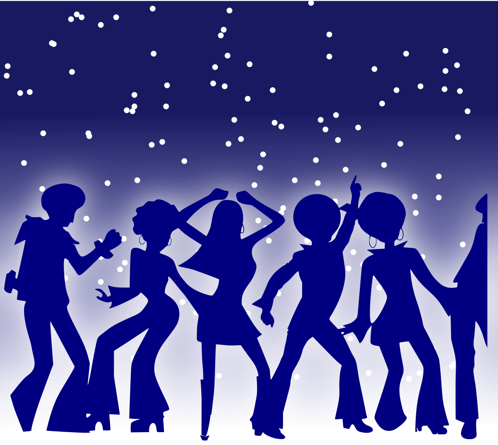
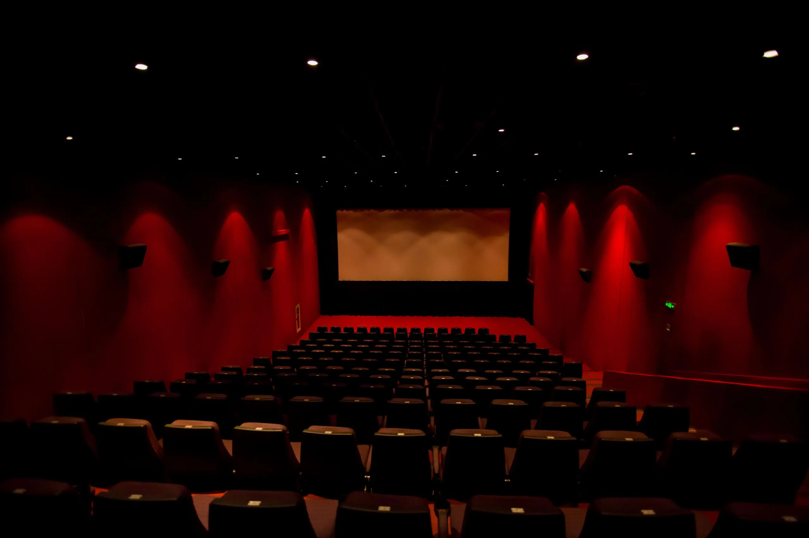

Ocupatiile mele
Teakwondo
 Taekwondo...... Sporturile sunt jucate in intreaga lume, fie ca hobby-uri, cariere, fie ca parte a regimurilor de fitness.
Jocurile diverse au crescut in popularitate pentru a strange o imensa poveste in intreaga lume.
Regulile si caracteristicile acestor jocuri sunt dinamice si sunt guvernate de organisme internationale.
Cele mai multe dintre aceste sporturi sunt incluse in Jocurile Olimpice, in care diferite tari din intreaga lume concureaza reciproc.
Sporturile sunt, de asemenea, industrii lucrative, generand venituri de miliarde de dolari, in special in tarile dezvoltate. Eu am ales un gen de sport de care nu ma pot desparti deja de 8 ani : Taekwondo-sport caracterizat in special prin lovituri inalte cu piciorul si lovituri cu pumnul. Taekwondo este unul dintre sporturile nationale coreene, practicat de peste 2000 mii de ani, reprezentand unul dintre cele mai vechi arte martiale.
Taekwondo...... Sporturile sunt jucate in intreaga lume, fie ca hobby-uri, cariere, fie ca parte a regimurilor de fitness.
Jocurile diverse au crescut in popularitate pentru a strange o imensa poveste in intreaga lume.
Regulile si caracteristicile acestor jocuri sunt dinamice si sunt guvernate de organisme internationale.
Cele mai multe dintre aceste sporturi sunt incluse in Jocurile Olimpice, in care diferite tari din intreaga lume concureaza reciproc.
Sporturile sunt, de asemenea, industrii lucrative, generand venituri de miliarde de dolari, in special in tarile dezvoltate. Eu am ales un gen de sport de care nu ma pot desparti deja de 8 ani : Taekwondo-sport caracterizat in special prin lovituri inalte cu piciorul si lovituri cu pumnul. Taekwondo este unul dintre sporturile nationale coreene, practicat de peste 2000 mii de ani, reprezentand unul dintre cele mai vechi arte martiale.
Inotul

10 beneficii de a practica inotul
- 1 Este un sport recomandat copiilor
- 2 Inotul este un sport sigur si pentru viitoarele mame
- 3 Te ajuta sa elimini stresul si frustrarile acumulate de-a lungul zilei
- 4 Inotul iti intareste increderea in tine si iti induce o stare de spirit excelenta
- 5 Inotul imbunatateste somnul
- 6 Este unul dintre sporturile care ard cele mai multe calorii
- 7 Este o optiune foarte buna de antrenament pentru persoanele care sufera de afectiuni precum astmul sau scleroza multipla
- 8 Este foarte indicat in tratamentul persoanele cu leziuni, artrite sau alte afectiuni medicale
- 9 Inotul iti antreneaza si organele interne
- 10 Inotul iti lucreaza fiecare muschi din corp
Limbi cunoscute


| Romana |
Rusa |
Italiana |
Engleza |
| Perfectie |
Perfectie |
B2 |
B2 |
Activitatile preferate in timpul liber



Activitatile
- Plimbari cu bicicleta in aer liber
- Ascultarea muzicii
- Dans
- Lecturarea cartilor preferate
- Privirea filmelor in cinematografe
- Cutreierarea Moldovei cu prietenii intr-un timp indelungat
SFARSIT,mersi pentru atentie!